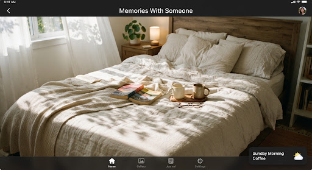

Some moments deserve to
stay forever.
Ruang penyimpanan abadi untuk merawat setiap foto, cerita, surat yang tak pernah sempat terkirim, dan lagu yang merekam hangatnya perjalanan waktu.
“Di sini waktu berhenti berputar. Jelajahi kembali cahaya yang pernah kita tinggalkan bersama.”
Everlasting Keepsake
Jevallene • Memories Archive
Featured Memory
The Night We Forgot The Clock
Duduk berdua di atas hamparan pasir dingin dengan desau ombak yang menyapu dermaga tua. Di bawah kilauan galaksi Bima Sakti, kita menghitung bintang jatuh sambil saling membisikkan janji rahasia yang tak akan pernah lekang oleh waktu.
Memory Timeline
Letters & Unsent Messages
The Things Left Unsaid in The Airport Corridor
“Aku melihat pintu gerbang keberangkatanmu perlahan tertutup. Aku ingin sekali berlari memintamu tinggal, tetapi aku sadar kamu memiliki semesta impian yang harus kau kejar...”
To The Autumn Leaves We Walked Upon
“Apakah kamu ingat bangku taman kuning tempat kita berbincang sampai lampu-lampu jalanan menyala satu per satu? Aku masih ingat suara tawamu yang menembus hembusan angin dingin...”
Midnight Scribbles in A Blue Notebook
“Semoga kamu menemukan kedamaian di setiap detik yang dulu pernah melukaimu. Bintang-bintang akan selalu menuntun kapalmu melewati badai...”
Music Memories

Yellow
Coldplay • Parachutes
Photo Archive
Tentang Arsip Ini
Memories With Someone adalah ruang pribadi untuk merawat setiap fragmen waktu yang pernah membuat hidup terasa utuh. Dibangun dengan filosofi sederhana: tidak ada kenangan berharga yang layak memudar begitu saja ditelan pergantian hari.